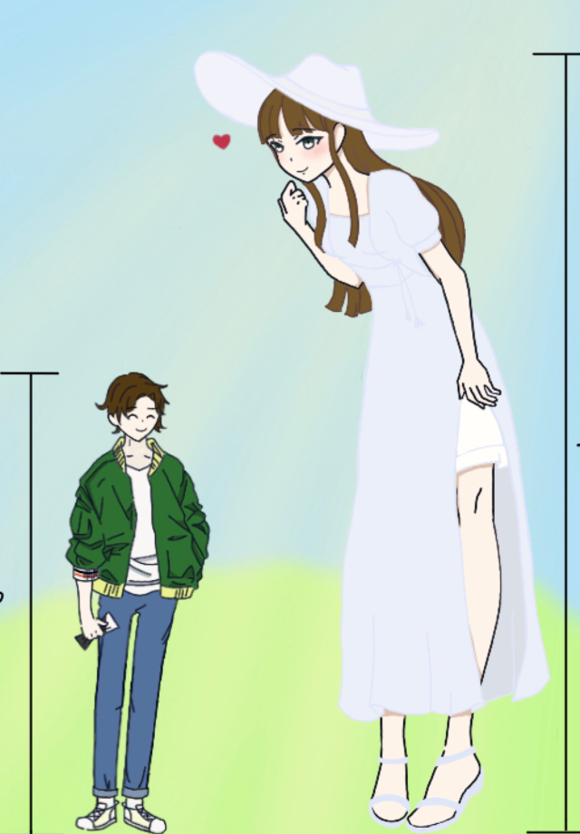

故事十
紅色蠟筆
有對夫婦買了棟擁有良好條件的中古洋房，神奇的是房價十分便宜，因此他們很快就搬了進去。
開始住沒多久，老公在走廊發現一隻紅色蠟筆。沒有多想的老公隨手就把蠟筆丟到垃圾桶裡。過幾天，換老婆撿到了紅色蠟筆，老公不解的跟老婆說：「我明明把它給丟掉了啊？」這一次他還特地把蠟筆丟到外面的垃圾場去。
詭異的是他們又再次撿到同一隻蠟筆，夫妻倆覺得很怪異，於是就開始調查紅色蠟筆掉落的附近。他們在牆上發現有水泥塗抹過的痕跡，於是就請工人來把牆壁敲開，裡面竟然是一間空無一物、飄著一股異臭的小房間。用手電筒照過去一看，房間的牆壁上被紅色蠟筆密密麻麻寫滿了:
媽媽對不起放我出去，
媽媽對不起放我出去，
媽媽對不起放我出去…
-

-

-

- 